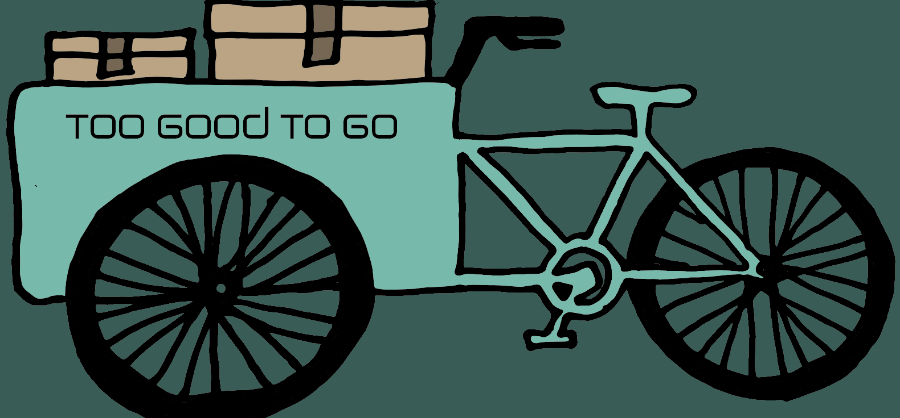
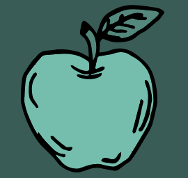

Duurzame fietsbezorging
Too Good To Go
Bij Too Good To Go combineren wij duurzaamheid en efficiëntie om jou favoriete gerechten en producten op een milieuvriendelijke manier bij jou thuis te brengen. Lees hieronder meer over onze bezorging, met de fiets als ons belangrijkste vervoersmiddel en hoe dit bijdraagt aan een groenere en schonere wereld.
Waarom maken wij gebruik van fietsbezorging?
Voorheen boden supermarkten, restaurants en bakkerijen pakketten aan met overblijvertjes waarbij je de pakketten zelf moest gaan halen. Daarom besloot Save & Cycle een onderzoek te doen over het vervoersmiddel die mensen gebruiken om hun pakketten te komen ophalen in de winkels/restaurants.
Hieruit is gebleken dat 64% van de mensen naar een winkel of naar een restaurant gaat door middel van de auto, om deze pakketten op te halen. Wij besloten dat dit niet meer kon en dat het anders moest en hebben daarom Save & Cycle opgericht.
Wij hebben wij besloten om gebruik te gaan maken van fietsbezorging om de volgende redenen:
-
Geen uitstoot.
Onze fietsen stoten geen schadelijke gassen uit, waardoor de luchtkwaliteit verbetert. - Lage CO2 bij het ontwikkelen van een fiets.
In tegenstelling tot een auto, motor, brommer of elektrische fietsen is er bij een fiets minder sprake van de hoeveelheid CO2 uitstoot bij het maken van het voertuig. -
Minder uitputten van de wereld.
Fietsen verbruiken aanzienlijk minder energie en grondstoffen in vergelijk met motorvoertuigen, wat goed is voor het behouden van de wereld. -
Verbetert verkeerssituaties.
Doordat fietsen ervoor kunnen zorgen dat files verminderd worden en ervoor kunnen zorgen dat er een vlottere verkeersstroom in stedelijke gebieden zoals Amsterdam ontstaat, is de fiets een heel handig vervoersmiddel. -
Lokale economie ondersteunen
Veel van onze fietsbezorgers zijn gewoon lokale bewoners. Door hun werk aan te bieden dragen wij bij aan de lokale economie.